Explore MCT
One app for your household’s media. Movies, shows, music, radio, audiobooks and photos run from your own home computer. Library tools, subtitle downloads and sync, family profiles and playback progress are built in, so there’s no plugin stack to assemble.
MCT is designed to keep CPU and memory use low during everyday playback. When your device supports the file, MCT streams it directly from your server.
Movies & Shows
Find the next film in a series, finish an episode on another Firestick, and fix subtitles that drift out of sync.
Film Collections
Film Collections
- Browse the series in release order. MCT groups related films automatically. Open Browse collection from a film’s details to see the titles you have.
- Spot gaps in your collection. Run a missing-movie check on the MCT computer to see which released films are absent from your library.
- Find a new arrival or an old favourite. Open Recently added to see what’s new, jump to a letter using the alphabet rail, or type part of a movie’s title into Find a title.
- Browse by poster. Connect TMDB to fill in artwork, descriptions, cast and episode details. Correct a match or choose different artwork when needed.
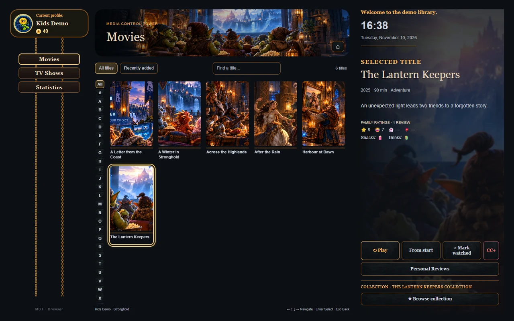
I loved it!
Subtitle Downloads & Sync
Subtitle Downloads & Sync
On the MCT computer, connect a subtitle provider under Settings → Connections & services → Subtitles. In the browser, select a movie or episode, open CC+ and choose a result to download.
With automatic sync set up, MCT compares the subtitle timing with speech in your video. It can shift lines that appear too early or too late and correct drift when subtitles start in sync but fall out of step as the video plays. If MCT can’t confidently match the timing, it keeps the original and marks the subtitle for review.
- Use a compatible subtitle already in the video, import your own file or search for another release.
- Queue subtitle downloads for upcoming episodes, a season or a whole show from the MCT computer.
I loved it!
Resume & Playback
Resume & Playback
- Resume in another room. Your profile’s viewing progress follows you between Firesticks.
- Watch in order or shuffle a show. Jump to a season, resume the next episode, or play a random episode on Firestick without changing your regular Continue Watching progress.
- Catch up your watch history. Mark an episode, a season or an entire show watched or unwatched.
- Play files your Firestick can’t handle directly. MCT can convert compatible video or audio for playback on demand while keeping the original file intact.
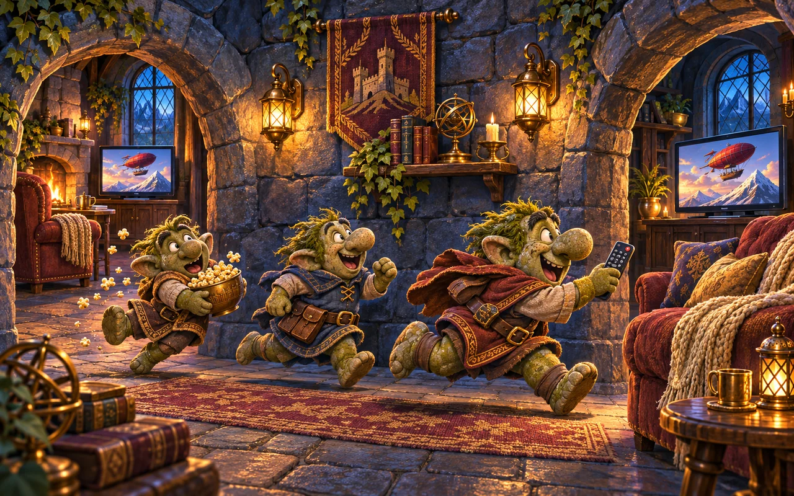
Family Reviews
Family Reviews
Kids can leave a review right from their own profile. Open Add Review, pick a rating or a quick reaction like I loved it!, choose a snack and drink pairing if they like, and save. Family members can compare their scores for movies, shows and individual episodes.
Earn Dexterino's for sharing what you thought. Each profile can earn 5 Dexterino's for its first review of a title, plus 5 for its first snack pick and 5 for its first drink pick. The coins go into the Treasure Chest and can be spent on snacks to feed companions.
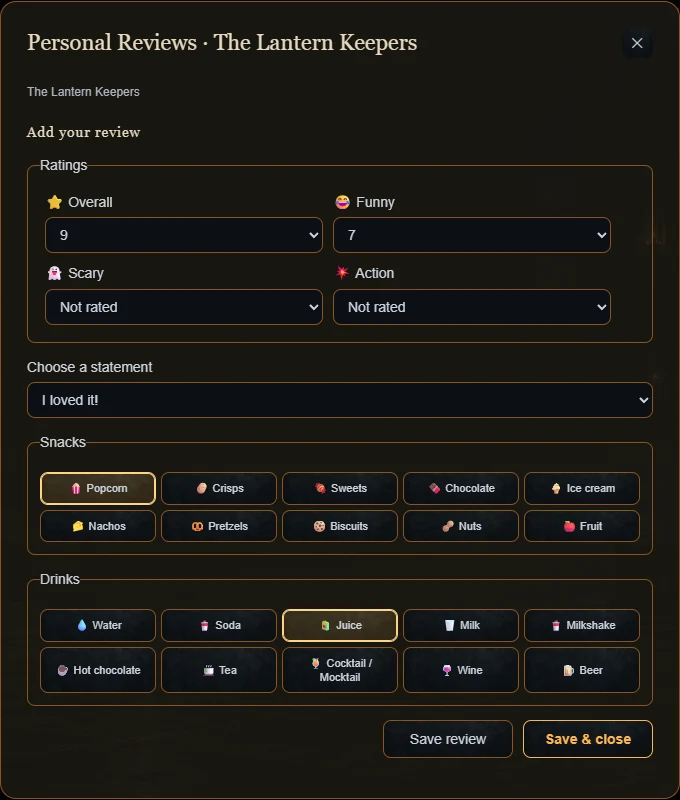
Live TV & Guides
See what’s on across the channels you actually watch, then tune in straight from the guide.
Your Favourite Channels
Your Favourite Channels
Save the channels you watch as favourites in IPTV. Your TV Guide shows only your favourite channels, with what’s on now and what’s coming up from your own programme guide.
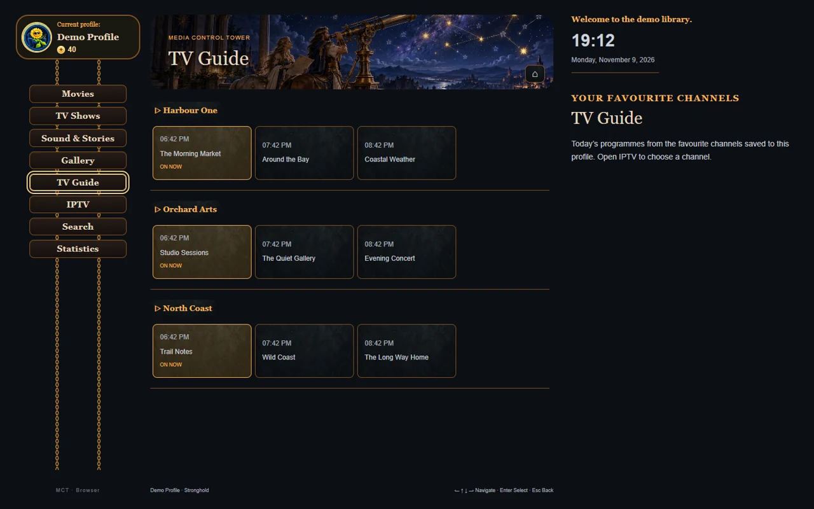
Watch from the Guide
Watch from the Guide
See something you want to watch? Select its programme listing and choose Watch channel to tune in live. You can also select a channel’s name directly in the guide.
Automatic reconnect on Firestick. If a live channel freezes, MCT can try reconnecting to the same channel for you.
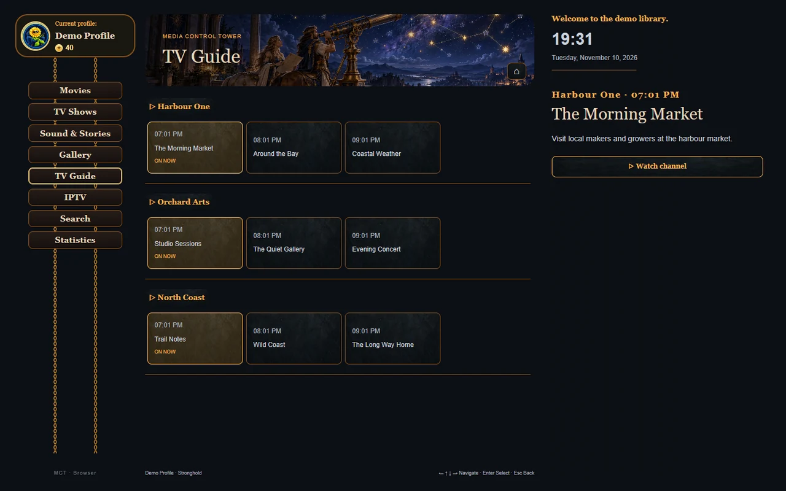
Your Playlists & Providers
Your Playlists & Providers
Bring your own legal IPTV sources. Use MCT with licensed services you’re authorised to watch or free-to-air streams made available for public viewing. MCT provides the player. You supply the playlist or provider login and the electronic programme guide (EPG).
- Save multiple IPTV providers. Live TV brings the channels from your enabled providers together, while their accounts, programme guides and stream limits stay separate.
- Switch between saved servers. If a provider gives you alternative server addresses, save them once and pick another server from the list when you need it.
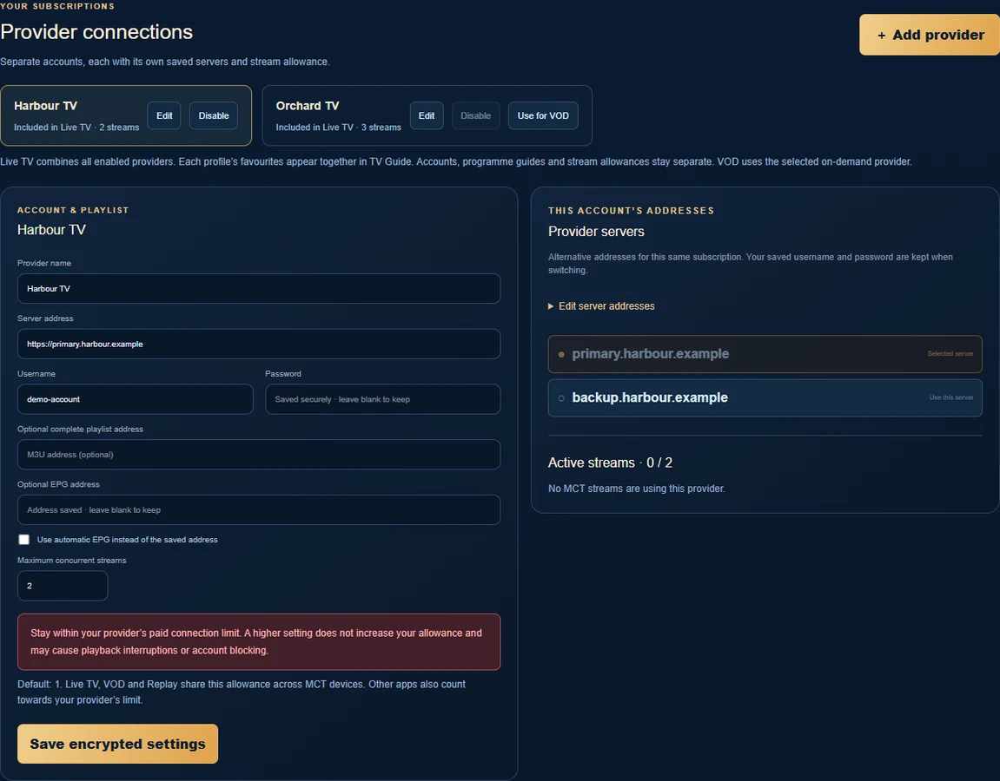

One Server, Multiple TVs
One Server, Multiple TVs
Connect the TVs around your home to the same MCT server. When your IPTV plan allows multiple streams, people in different rooms can watch different channels at the same time.
In Provider connections on the MCT computer, set the Maximum concurrent streams for each provider to match your plan. You can see which devices are streaming and stop a stream from there to free up a slot.
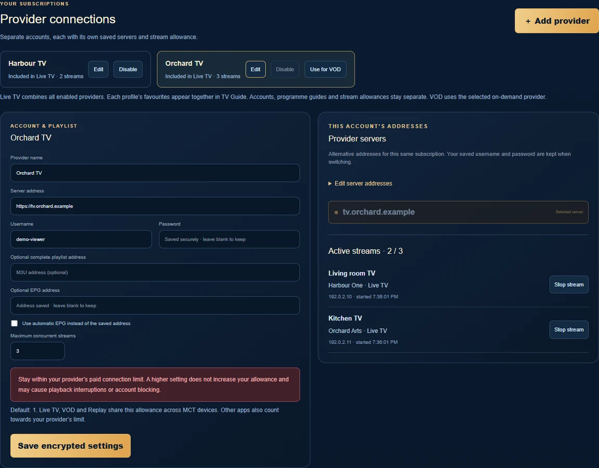

Sound & Stories
Find a station, put on an album, make a Mix Tape or take a story with you. Add your own photos and a family quiz while the music plays.
Web Radio
Web Radio
Find a station and keep it handy. Search by station name or browse by genre, then save the stations you like to Favourites. Already have a stream link? Open Web Radio → Add station on the MCT computer and paste the URL.
Open Gallery Slideshow and pick one of your saved photo albums while the station keeps playing. Turn on Quiz in the slideshow settings and see who calls out the answer first.
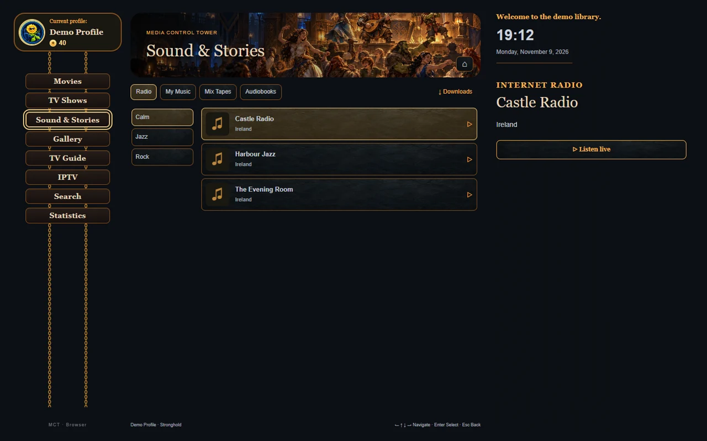
My Music
My Music
Give the music you own a proper home. Browse local artists, albums and songs, with artwork where available. Play an album in order, shuffle an artist’s albums, or see what’s coming up in the queue. Compilations stay together and each track keeps its artist credit.
Put on an old favourite and let photos from your own albums rotate on screen. Add quiz questions to the slideshow and give everyone in the room something to guess.
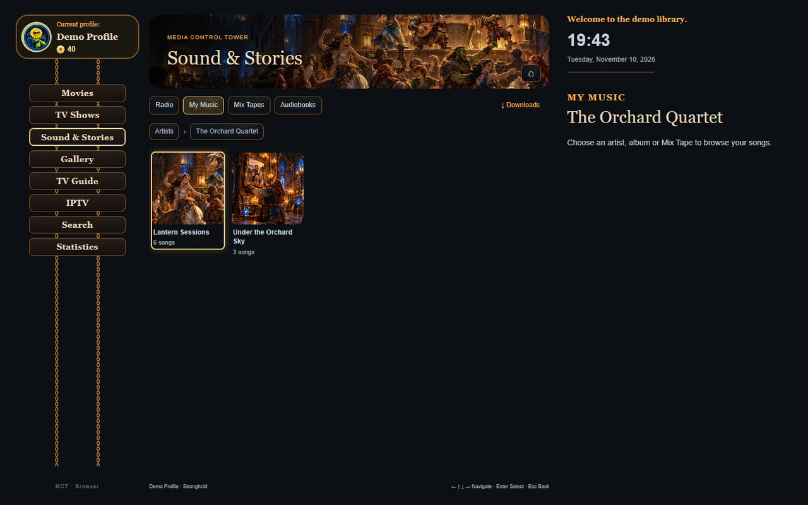
Mix Tapes
Mix Tapes
Make a playlist for the mood you’re in. Add individual songs, a whole album or tracks by an artist from your music library. Save a Kitchen Disco for dinner prep or a Sunday Slowdown for a quieter morning.
Pair your mix with a slideshow from your saved albums, then switch on the quiz for a family game night with its own soundtrack.
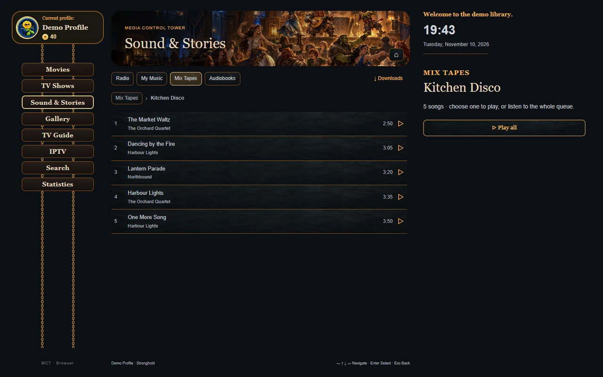
Audiobooks
Audiobooks
Take the next chapter with you. On your Android phone or tablet, open an audiobook and choose Download while you’re on Wi-Fi. Every chapter is saved on that device, so you can keep listening offline with the screen locked.
Pick up at home where you stopped. When the app reconnects to your MCT server on your home network, it syncs your listening position automatically. Reopen MCT when you get home if you closed it on the way.
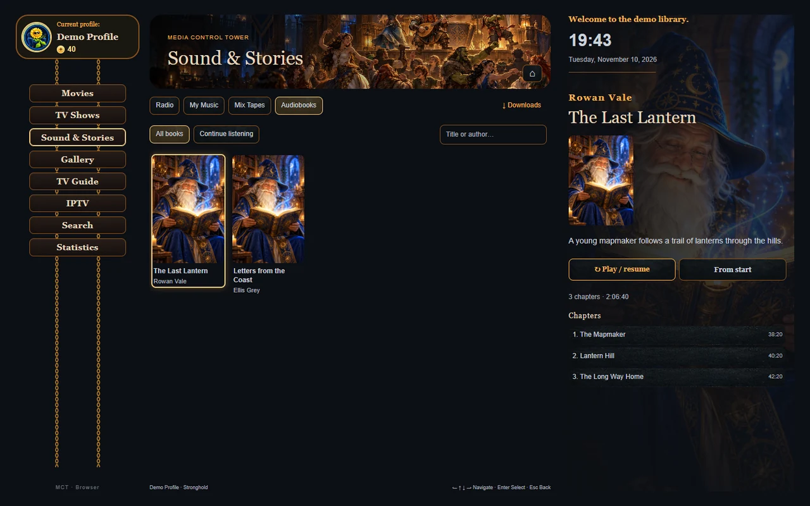
Gallery
Put your photos on the big screen when people come over, or bring an old phone or tablet back to life as a digital frame.
Photos on the Big Screen
Photos on the Big Screen
Give guests something to gather around. Pick photo albums from your MCT server and put a full-screen slideshow on the TV for a birthday, a family visit or an evening with friends.
Set the pace and transitions, shuffle your pictures, or show a clock and captions. Play music or a Mix Tape from Sound & Stories alongside the photos, and turn on Quiz if the room feels like a game.
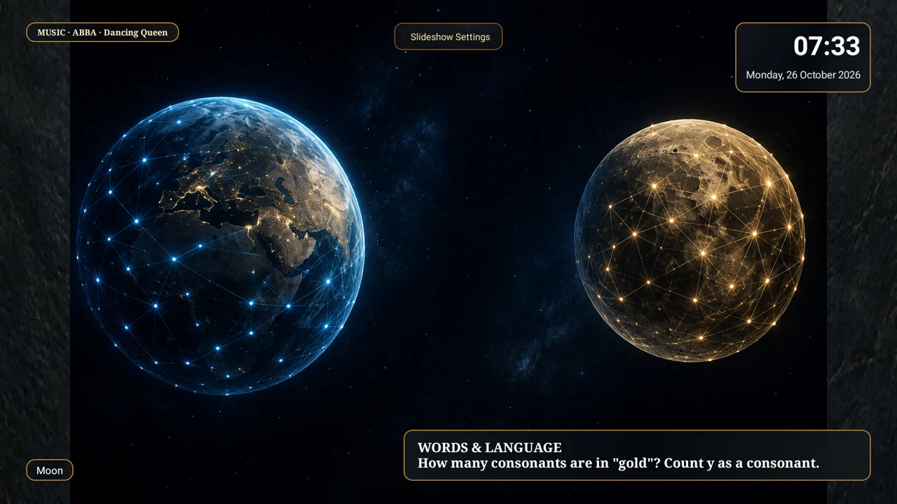
Bring Old Devices Back to Life
Bring Old Devices Back to Life
Turn a spare Android phone or tablet into a digital photo frame. Give that device in the drawer a new job on the kitchen counter or a bookshelf, playing the photos you want to see every day.
In Gallery → Choose galleries, pick albums from your MCT server or add a photo folder already on the device. A slideshow using only local folders can run without Wi-Fi. With a dedicated Gallery profile, you can schedule the display to go dark overnight and resume in the morning.
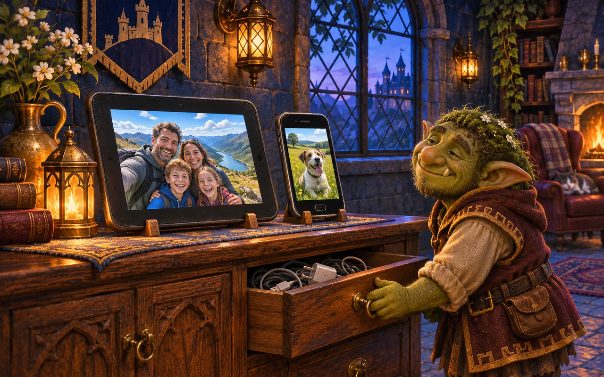
Media Library
Bring files from different drives into one library, scan what changed, and give each title the artwork and details you want.
Multiple Folders, One Library
Multiple Folders, One Library
Two drives can feed the same Movies library. Keep films in D:\Movies and E:\Movies and browse them together in one Movies menu. MCT indexes the files where they already live.
On the MCT computer, open Libraries, choose Folders on the library you want to expand, then select Add folder. Save the folders and scan that library to bring in the new titles.
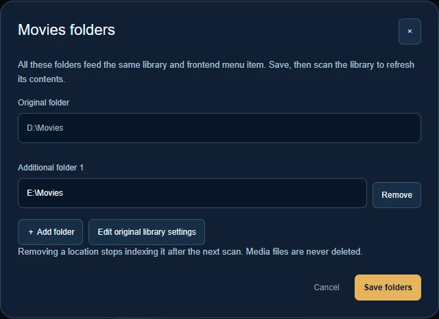
Scan One Library at a Time
Scan One Library at a Time
Added a few films? Select Scan on the Movies library card to update that catalogue. Each library has its own controls, so you can refresh movies, shows or another collection as you need it.
Use Settings → Library refresh to schedule daily or weekly scans. Once files are indexed, use Search to find a title across your libraries.
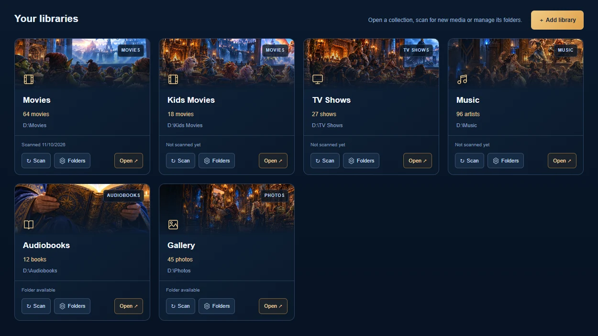

Edit Details & Upload Artwork
Edit Details & Upload Artwork
Open Metadata on the MCT computer and select an item to edit. Fix a film’s title, description, year or age rating, or upload your own cover with Choose cover. Artwork can be a JPG, PNG or WebP up to 10 MB.
Use filters to find missing artwork or descriptions, correct an online match, or fill in details for your own recordings. The available fields follow the media type. You can edit show, season or episode details, photo captions, and information for audiobooks and music. MCT saves your changes alongside the media and keeps the original file intact.
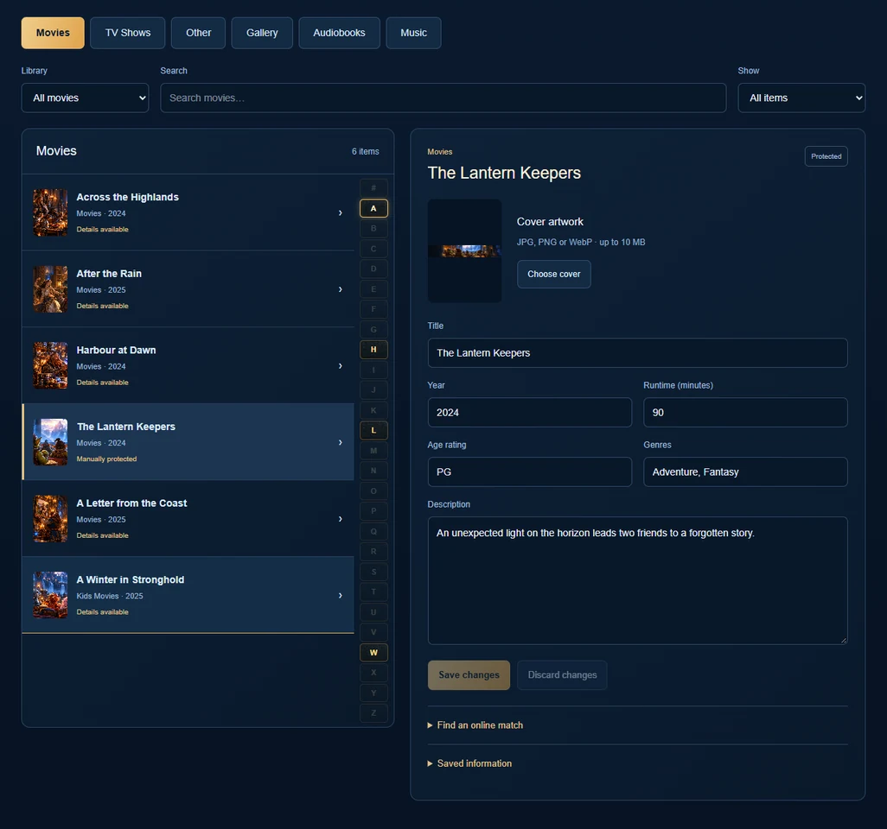

Statistics & Companions
Reward what kids do away from the TV. Parents can award Dexterino's for homework, chores or helping with cooking. Collecting and upgrading companions is free. Coins, packs and upgrades cannot be bought with real money.
Statistics
Statistics
See watching time and favourites for each profile, including frequently watched films and shows and favourite artists and radio stations.
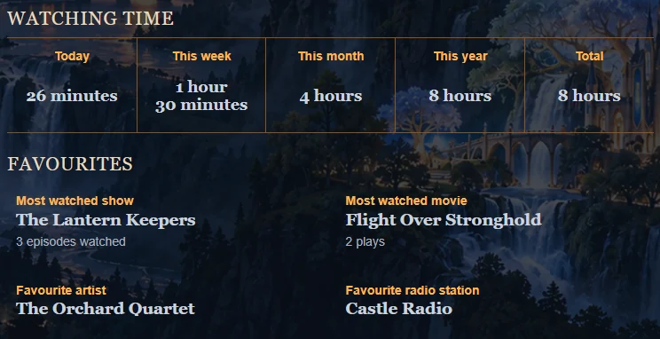
Companions
Companions
Collect companions, feed them and unlock new artwork and powers as they grow. Companion packs and level expansions are free to download.
Add a pack or level expansion. Import the downloaded ZIP on the MCT computer under Settings → Appearance & personalisation → Companion packs. Packs add companions. Level expansions add artwork and powers to existing companions and carry over each profile’s progress.
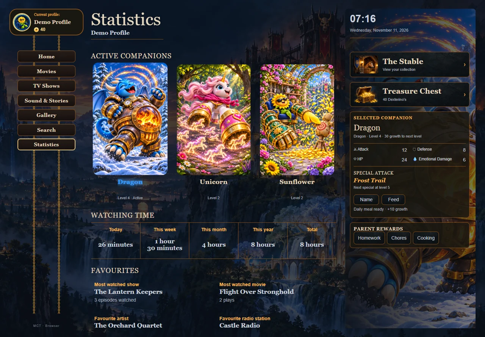
Stable
Stable
Browse your collection in the Stable. See which companions are resting and bring one back out when you want to make it active again.
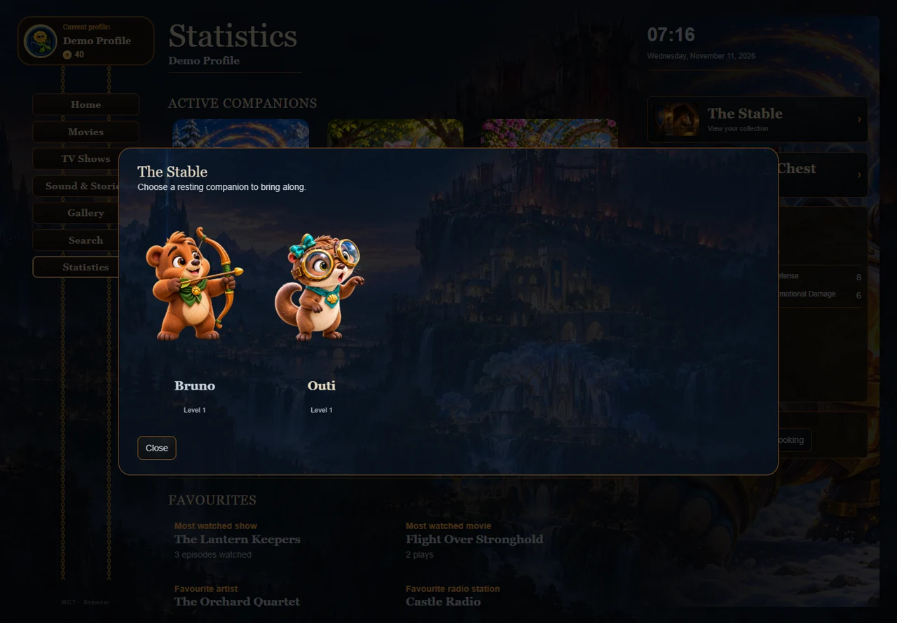
Treasure Chest
Treasure Chest
A parent can award Dexterino's for helping with dinner. The coins go into the child’s Treasure Chest, where they can spend them on snacks for their companions. See how Parent Rewards works.
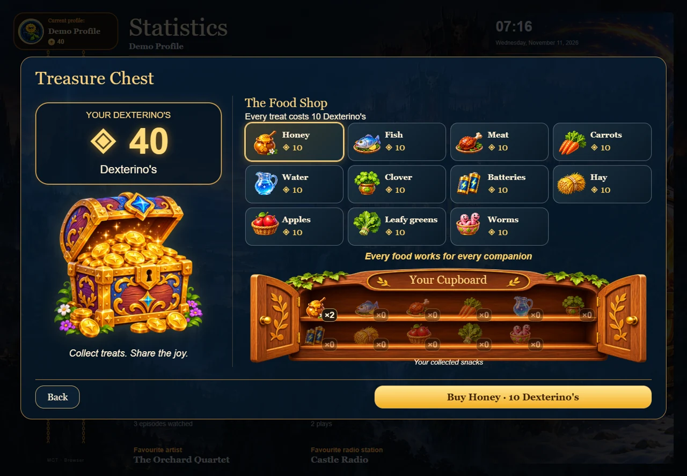
Devices
MCT is designed to run lightly on compatible Android phones, tablets and Amazon Fire TV Sticks, including older devices.
Keep Older Devices Useful
Keep Older Devices Useful
Your home server manages the library, and compatible devices can play supported files directly. MCT can prepare compatible streams for Firesticks when the original format needs conversion.
Even a Samsung Galaxy S7 running Android 8 has been tested as a digital photo frame. A spare phone or tablet can get a new job around the house. Explore Gallery
Your Devices at a Glance
Your Devices at a Glance
See which phones, tablets and Firesticks are connected, check their installed MCT versions, and give each device a name you recognise.
Once MCT is available in app stores, app updates will come through the store on each device.
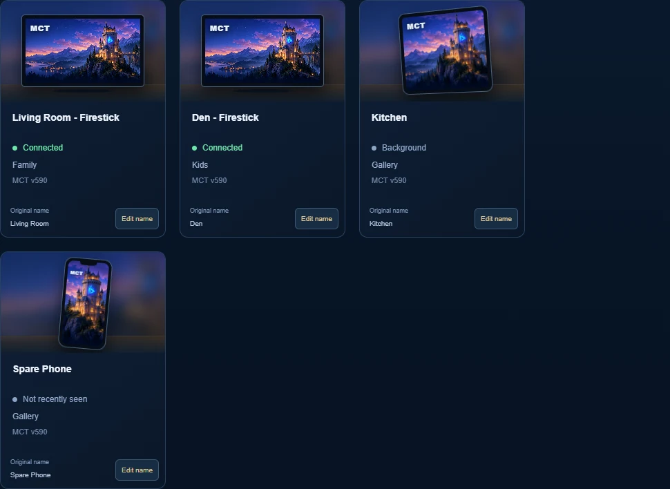

Family Profiles
Give each family member their own library access, viewing progress, favourites and companions.
Set Up a Profile
Set Up a Profile
On the MCT computer, open Profiles in the sidebar. Choose Create profile or select Edit on an existing profile. Give it a name and picture, then choose its starting screen and skin. Select Save profile to apply your choices.
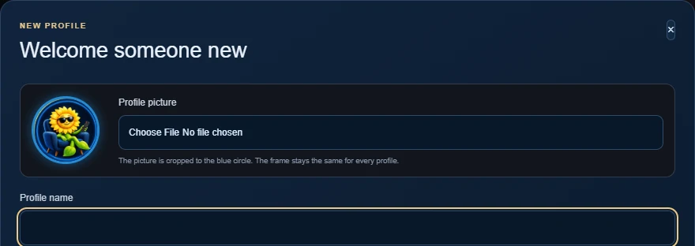
Choose What Each Person Can See
Choose What Each Person Can See
Choose which menu items and media libraries each profile can open. Share an entire library, select individual titles or hide the library. For IPTV, allow or block groups, hide individual channels, or hide live IPTV and on-demand content separately.
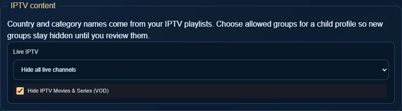
Screen Time & Progress
Screen Time & Progress
Set an optional daily screen time allowance or add extra minutes for today. An optional PIN protects access to the profile. Use the login activity setting to see the profile’s last login on its card.
Each profile keeps its own viewing and listening progress, favourites and companion progress.
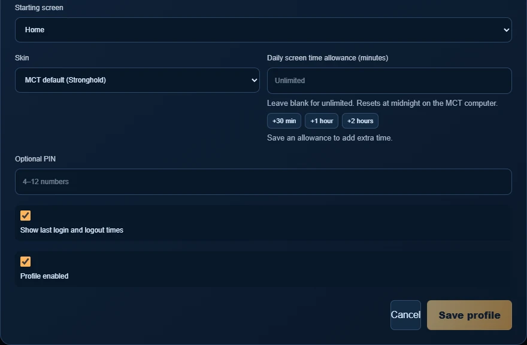
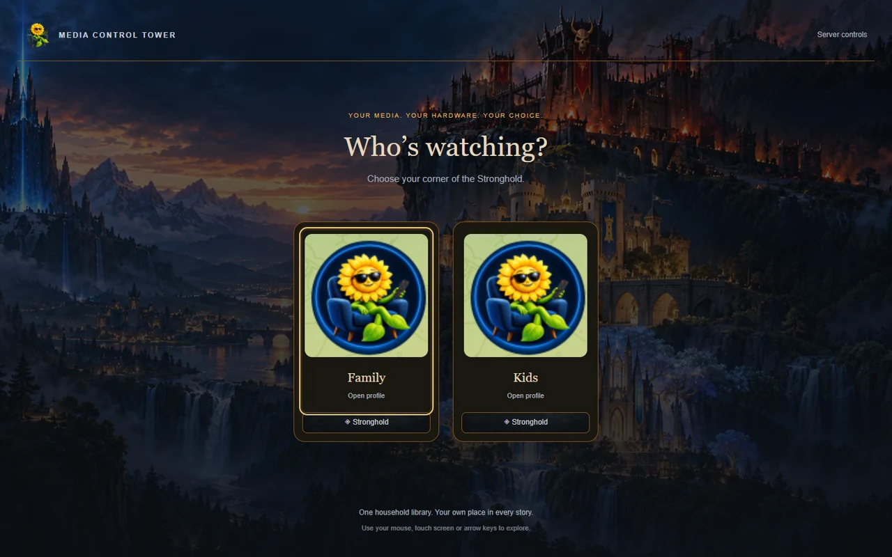
Backup & Transfer
Move your MCT setup to another computer on your home network and pick up with the settings and progress you already have.
Export Your Setup
Export Your Setup
On your current MCT computer, open Backup & Transfer in the sidebar and choose Download MCT transfer file. The file carries supported settings and records such as folder mappings, device names, favourites, metadata and viewing progress.
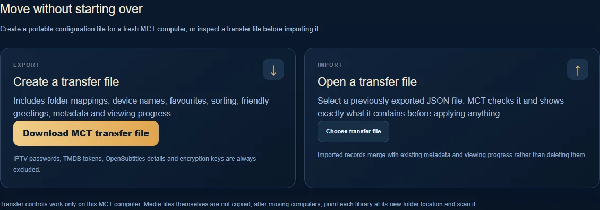
Move to a New Server
Move to a New Server
On the new MCT computer, open Backup & Transfer, choose the exported JSON file and review the preview before confirming the import. Imported records merge with existing metadata and viewing progress.
Move your media separately, update the library paths where needed and scan the libraries. Reconnect external accounts and set profile PINs again on the new server.